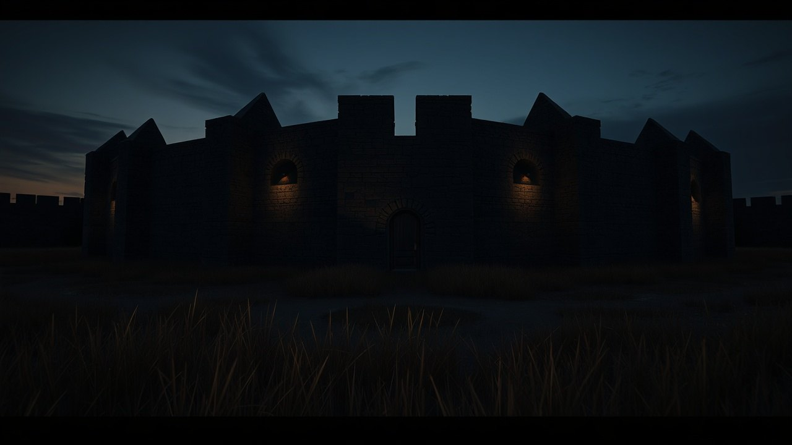

Tartaria fills three centuries of European atlases as a named, bordered, city-studded empire. Then between 1771 and 1812 it disappears from the maps with no war declared, no treaty signed, and no conquest narrative in the archives.
I have spent the last two weeks pulling scans from the Library of Congress Geography and Map Division, the British Library's King George III Topographical Collection, and the David Rumsey Map Collection at Stanford. The pattern is not subtle. It is on every shelf.

Mercator Drew It. Blaeu Drew It. Britannica Defined It.
Gerardus Mercator's 1595 Atlas sive Cosmographicae Meditationes, currently held in the Library of Congress G1015.M5 collection, labels the entire northern landmass of Asia as Tartaria. Not a region. Not a frontier. A named territory with internal subdivisions.
Joan Blaeu's 1665 Atlas Maior, the eleven-volume edition housed at the Österreichische Nationalbibliothek in Vienna, expands this into Magna Tartaria with detailed cities, rivers, and political boundaries drawn to the same standard as France or Spain.
The 1771 first edition of Encyclopaedia Britannica, volume III page 887, gives Tartary a standalone entry as a recognized geographic and ethnopolitical entity stretching from the Caspian Sea to the Pacific. That is not a footnote. That is reference-grade acknowledgment from the most authoritative English-language source of its era.
The 1812 Cutoff
Pull any major atlas printed after roughly 1812 and the same coordinates now read Russian Empire, Chinese Tartary, or Independent Tartary as a shrinking residual. Aaron Arrowsmith's 1812 world map at the British Library shows the transition mid-stream.
By the time John Tallis publishes his Illustrated Atlas in 1851, the word Tartaria is functionally extinct on commercial maps of Asia. The transition takes roughly forty years across hundreds of independent publishers in London, Paris, Amsterdam, and Saint Petersburg.
No coordinated rename of a continent-sized territory has ever happened that fast in cartographic history without a documented political cause. The Soviet renaming of cities in the 1920s left a paper trail in every newspaper of record. This one did not.
The Conquest That Is Not in the Archives
The official explanation, when one is offered, is that Tartaria was always just a loose European exonym for the steppe and Russia simply absorbed it through the Siberian expansion of the 17th and 18th centuries.
That answer collapses against the 1771 Britannica entry. If Tartary was already absorbed by 1700, why does the most authoritative English encyclopedia still treat it as a current nation seventy years later? The chronology does not align with the Romanov expansion timeline taught in standard Russian historiography.
The Treaty of Nerchinsk in 1689 and the Treaty of Kyakhta in 1727 are the documents usually cited. Both deal with border arrangements between Russia and Qing China. Neither contains the word Tartaria as a subjugated party. There is no Appomattox for this empire.
Either a continent-spanning civilization vanished without leaving a single surrender document, or the rename was a deliberate editorial decision executed across three generations of European publishers.
The Star Forts Nobody Inventoried
The architectural residue is the part that refuses to go away. Star forts, the bastion-style fortifications with geometric pointed walls, exist by the thousands across the territory formerly labeled Tartaria.
Bourtange in the Netherlands, Naarden outside Amsterdam, Palmanova in Italy, the Peter and Paul Fortress in Saint Petersburg, Fort Bourtange's twin structures in Kazakhstan and western Siberia. The design language is identical across thousands of miles and supposedly unrelated sovereign states.
No central catalog of these structures exists. UNESCO lists a handful as World Heritage sites. The rest sit on Google Earth, plainly visible, with no unified architectural origin story in mainstream historiography. The standard answer is that each was built independently by local Vauban-influenced engineers between 1600 and 1750, which is the exact window Tartaria occupies on the maps.
What the Wikipedia Edit History Shows
The Wikipedia article for Tartary was edited within the last 24 hours as of this writing. The talk page archive runs to multiple sub-pages of debate about which 19th-century sources count as authoritative for declaring the entity fictional versus geographic.
The article currently frames Tartary as a European misconception about a region rather than a polity. The 1771 Britannica entry is cited and then immediately contextualized as outdated. The Blaeu and Mercator atlases are mentioned without their political subdivisions being discussed.
An editorial choice has been made about how to read the same primary sources I am citing. That choice is defensible. It is also not the only defensible reading of cartographic evidence that survived three centuries of independent reproduction.
What the Receipts Actually Say
Three things are documented and not seriously contested. Mercator 1595 labels northern Asia as Tartaria. Blaeu 1665 expands it with internal cities and borders. Britannica 1771 treats it as a recognized entity in its first edition.
Three things are also documented and not seriously contested. By 1812 the maps say Russian Empire. No conquest treaty bearing the name Tartaria exists in the Russian state archive or the Qing archive. Thousands of star forts of unified design language stand across the territory with no centralized building program in the record.
The gap between those two sets of facts is what the modern map does not show you.
I am not telling you a hidden empire ruled the world. I am telling you that three of the most authoritative geographic publications in European history named a place, drew its cities, and defined its borders, and then that place disappeared from the next edition without an explanation that survives in the archive.
That is a hole. A specific, measurable, citable hole between 1771 and 1812 in the cartographic record of one third of the Earth's land surface. Either the hole is editorial or the hole is geographic. Both options change what the word history means.
Pull a 1770s atlas. Pull an 1820s atlas. Lay them side by side. Tell me in the comments which one is lying.
Before you go
7 books the Vatican doesn't want you reading. Free PDF, the texts they cut, with sources. Joined by 140+ Inner Circle members.
No spam. Unsubscribe anytime.
Go deeper
The Hidden Canon, Vol. I, Enoch. Jubilees. Thomas. Mary. Judas. 90 pages, 14 chapters, every receipt cited. The books your Bible quietly removed.
Read the Canon →Books that informed this investigation
As an Amazon Associate, Hidden Epoch earns from qualifying purchases. Cost to you: nothing.
Research safely
The VPN we use to research without being tracked. First 3 months free.
Get NordVPN →